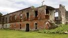
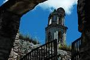
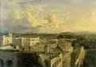

'EX HACIENDAS'
En este Segmento de lo que es el turismo de Izucar de Matamoros Puebla les hablaremos sobre dos Ex Haciendas que habitan en esta ciudad y que son mus lindas y que tienen una gran
historia en cada pared, rincon y parte de estas construcciones hoy en ruinas debido a desastres naturales que causaron esto, hasta la fecha son muy visitadas, no solo por lo que
contienen, si no tambien or el suspenso que estan tienen y por la historia ya mencionanda, es tan profunda y tan completa que aveces unos se admira y sorprende de lo que úede llegar
a saber y aprender cuando conoce sobre estas maravillas.
'EX HACIENDA DE SAN NICOLAS TOLENTINO'
José y Tomas del Águila, dueños de la hacienda de San Nicolás, 1707.
Martín Calvo Viñuales, propietario del ingenio en el año de 1715. Había sido alcalde ordinario de Puebla en 1691.
Los labradores en chietla en el año de 1782 solicitan procesión de agua del rió nexapa.
Ignacio Iraeta dueño del ingenio en el año de 1790 influye ante las autoridades que le corresponden “por superior decreto de termina que los indios de San Felipe Ayutla deben
contribuir con 50 yuntas a las haciendas de San Nicolás Tolentino, en recompensa del corte de madera y huso de pastos que les concede el propietario de dicha hacienda.
A mano derecha de la entrada se encuentra un tipo cisterna en la cual guardaban combustible en el año de 1945 con una capacidad de 1000 Lts. Y el Ingenio donde procesaban la caña
para hacer azúcar, piloncillo y alcohol de caña, la caña que la traían de ayutla y sus alrededores entraba a la hacienda por medio de un tren pequeño.

'EX HACIENDA DE SAN JUAN RABOSO'
El 3 de Agosto de 1935 se firma la escritura de venta de los predios y la parte libre que quedaba a la hacienda de Raboso luego de las afectaciones, 2,492 ha. 62 a. 39ca.
De tierras de riego con todas sus instalaciones, canales, presas, vasos de la laguna de Epatlan y manantiales, caminos, ferrocarril e Ingenio. De esta manera, las magnificas tierras
de Raboso, única hacienda importante del valle de Izúcar de Matamoros que había permanecido independientemente, pasaron a poder déla compañía civil e industrial de Atencingo. Es así
como un tipo de capitalismo triunfa sobre un empresario de origen porfirista.
La historia inicia el 26 de Septiembre de 1915 cuando Maria Gambu Viuda de maure compra a un precio de $1, 250,000 la hacienda e Ingenio de Raboso. Luego de la muerte de Maria Gambu
sus sucesores continuaron consolidando la explotación del ingenio.

'EX HACIENDA DE SAN JUAN BAUTISTA COLON'
Durante la guerra interna que hubo en México, comandado por los zapatistas que no querian a los ricos.
El dueño de esta hacienda era un estadounidense llamado por los trabajadores Mister Jenkins dueño de todo colon, rijo, Raboso, San Nicolás, Teruel y el Ingenio de Atencingo.
Era el terrateniente y tenia subyugados a los trabajadores esto provocó el inicio del movimiento zapatista en Puebla, una ves terminado el movimiento quedaron en ruinas las haciendas
y expulsaron al mister el vivía en Puebla y las ruinas pasaron a manos del gobierno, 4 años después se ocuparon para poner un regimiento de caballería de parte del ejercito federal
el cual estuvo en servicio 1985.1986 se cambio el regimiento quedando abandonada y en la actualidad esta a cargo del pueblo y la ocupan para hacer corridas de toros en honor al Santo
patrón de San Juan Colon.

Para llegar a San Nicolas!
Para llegar a Raboso!
Para mas informacion dar click en este link!